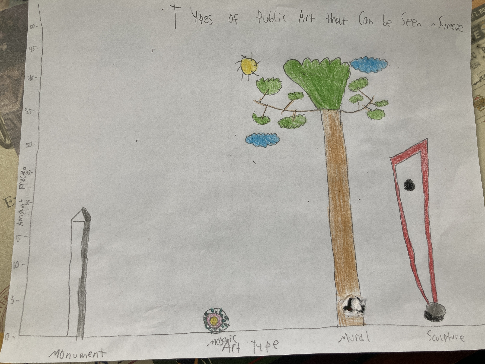

This article is a non-live source that touches on the topic of public art in Syracuse
The city of Syracuse has never exactly been known for being the flashiest of cities out there. From nasty winters to the lack of population size and tourist attraction compared to many other cities such as New York City or Los Angeles, Syracuse is not typically seen as a very attractive site to many outsiders.
However, this would be the wrong idea to have.
There’s plenty to do in Syracuse, New York. And it’s more than just going to sporting events at the JMA Wireless Dome (formerly known as the Carrier Dome), or visiting the plenty of stores at Destiny Mall.
One of the most expanding markets in the city? Public art.
Public art in the area has especially grown since the beginning of the 2010s decade. An average of about 4 new art pieces have gotten erected since the 2010s. In the preceding decade, only about 1 new piece got erected each year.
For Syracuse, much of this recent effort is for people in the community to learn more about the history of the city and become prouder of their city. But it can also be a way to increase tourism, making Syracuse an ideal destination not only for art lovers, but for anybody. The more public art a city has available , the more overall visual appeal the city has.
Steve Butler, Executive Director of CNY Arts, said the increase in public art is simply for more people to be drawn to Syracuse.
“Public art can actually enliven and energize a locality. They can be a draw. People actually come in to see public works of art.”
Kate Auwaerter, the Syracuse Public Art Coordinator, said public art helps gives the city an identity.
“I see public art as being primarily for the people of this community, but it’s also for people who are coming in from the outside who want to learn something about us. It informs people about who and what Syracuse is,” she said.
Auwaerter also says interactions from people with the art helps build Syracuse as a stronger city.
“When you go to a city and see a mural or some type of public art, people are going to take pictures of it. They’re going to put it on social media. So people will go and want to visit that and they will take pictures. The more art you have, the more entertainment, all that investment goes to making Syracuse and Central New York a better place,” she said.
The type of art that can most frequently be seen in Syracuse is murals. About 44% of all public art structures in Syracuse are murals as opposed to sculptures, monuments, or mosaics.

Murals are unique because they are painted exclusively on walls and use vibrant and lively art designs to make them come to life. One design in particular helped showcase hip-hop’s 50th anniversary by connecting Syracuse to late rapper Notorious B.I.G.
London Ladd, a part-time art professor at the Syracuse University School of Public Art and an artist himself, said these murals can show that a city has pride, and they can also inspire people.
“I think public art is so important. When I go to other cities like Philadelphia, which is a beacon of public art and murals, you see the pride that they have in it. Or in Rochester, when you go to their arts district, you see these gorgeous murals, and it really elevates the area in the sense of pride and just being a hub of art. I believe art can be very therapeutic, it can be very emotive, it can be inspiring, in any neighborhood, whether it’s predominantly Polish, Irish, or mostly Muslim. You get public art that touches upon the historical impact of that area, or the predominant people of that region, it helps,” Ladd said.
Where is most of the public art in Syracuse available for viewing? Right in the heart of the city. Most Syracuse art can be seen downtown, with 18 structures currently available. Every other neighborhood has less than ten available.
This shows that Syracuse’s recent efforts to add more and more public art structures to the city grows from a belief in the city’s foundation, and to help revitalize tourism, the effort must start from the heart of the city.
From the outside looking in, it may seem like there is not a lot to do in Syracuse, New York. But the city’s diverse array of public art shows that the people of Syracuse are committed to making sure people from all over the world come to the city to learn more about what makes it special.
There’s an old saying out there that you can never get to know a person before you walk a mile in their shoes, and in the case of Syracuse, it is difficult to judge the city until you see the immense pride that its citizens have in it.
Top Destinations to See Public Art in Syracuse